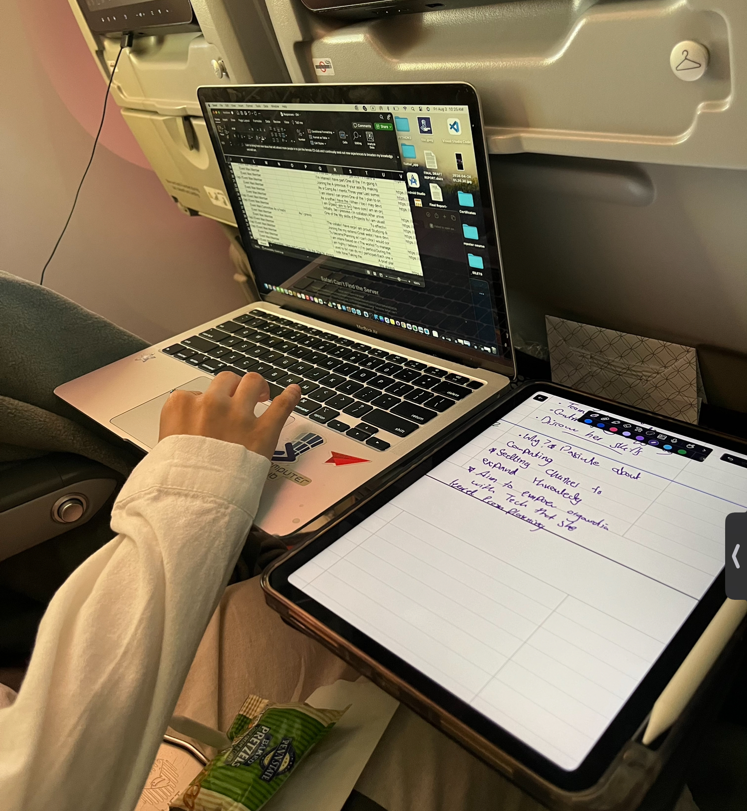
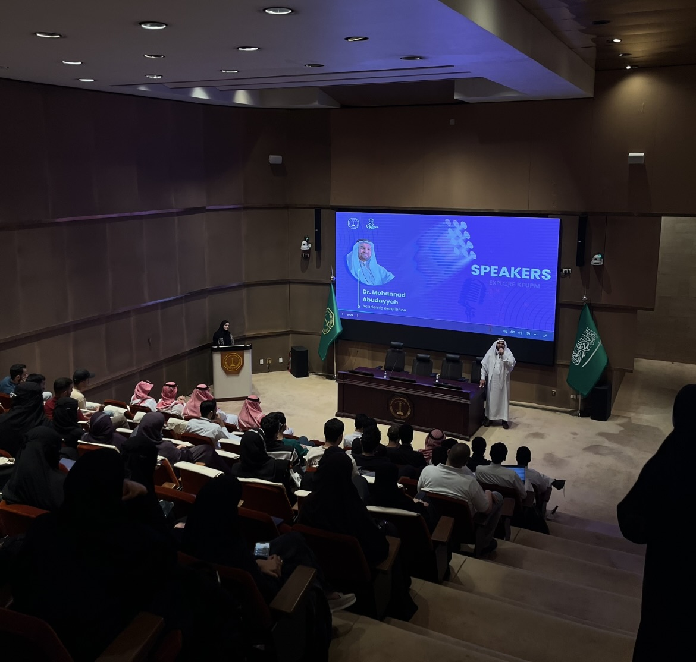
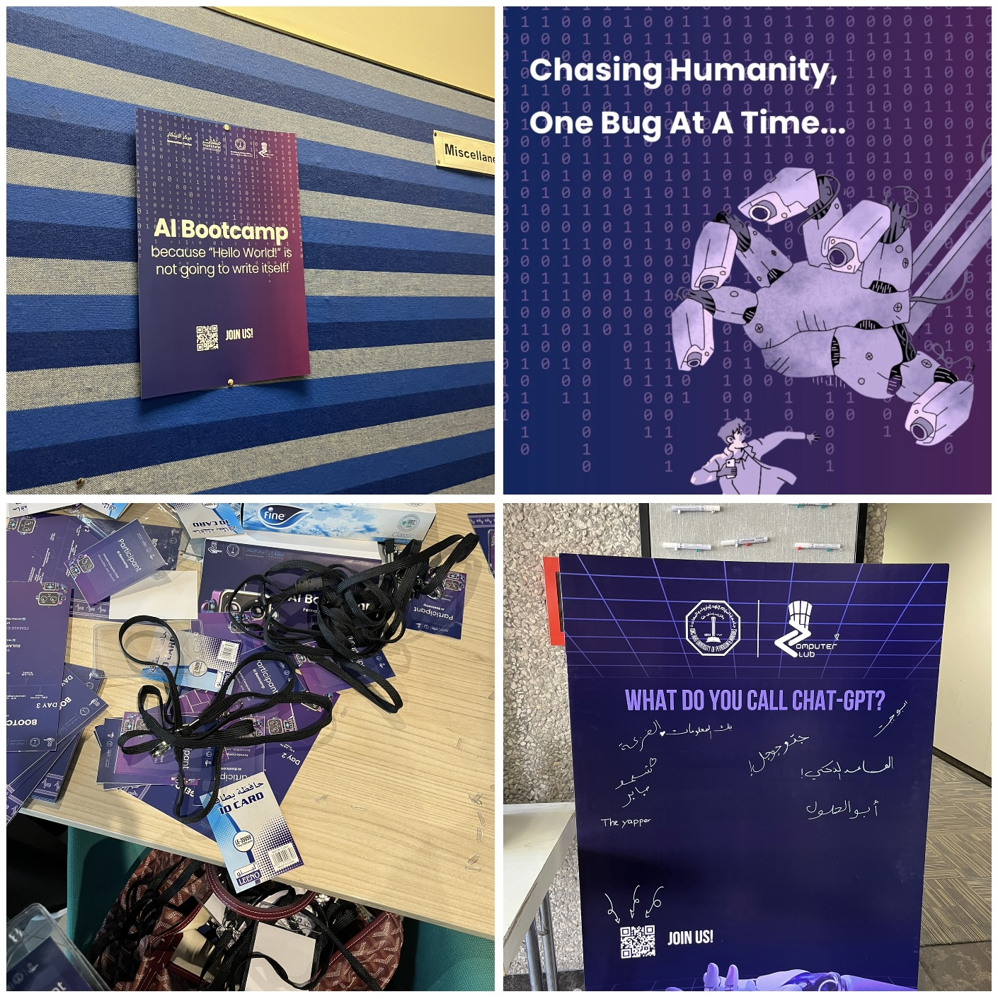
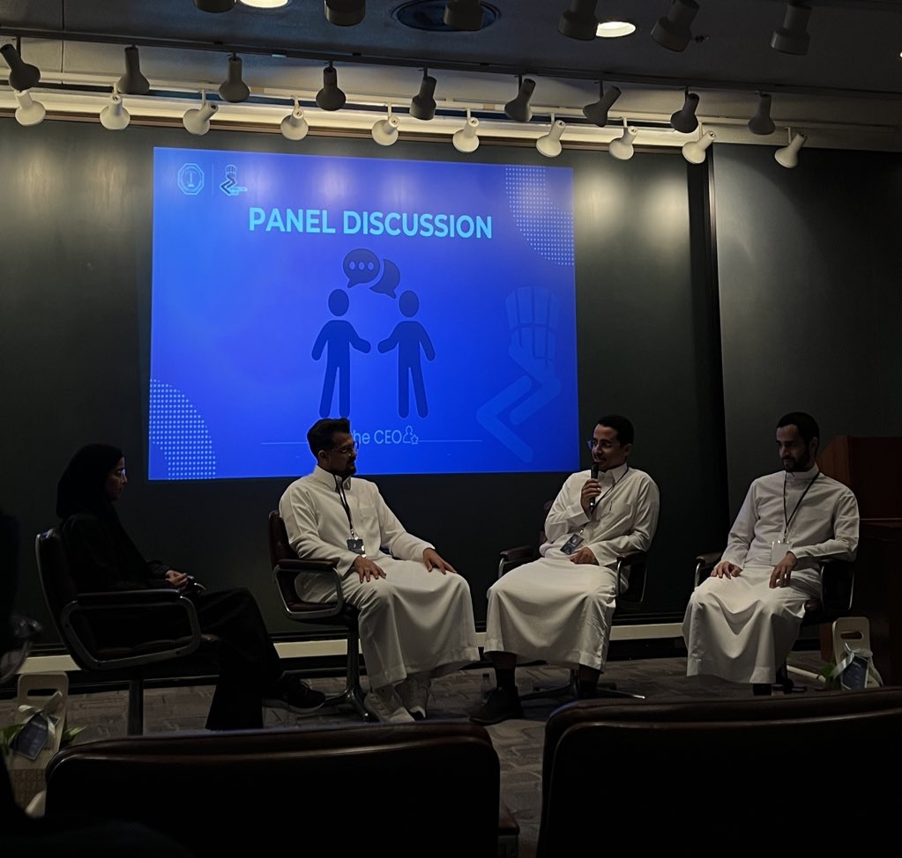
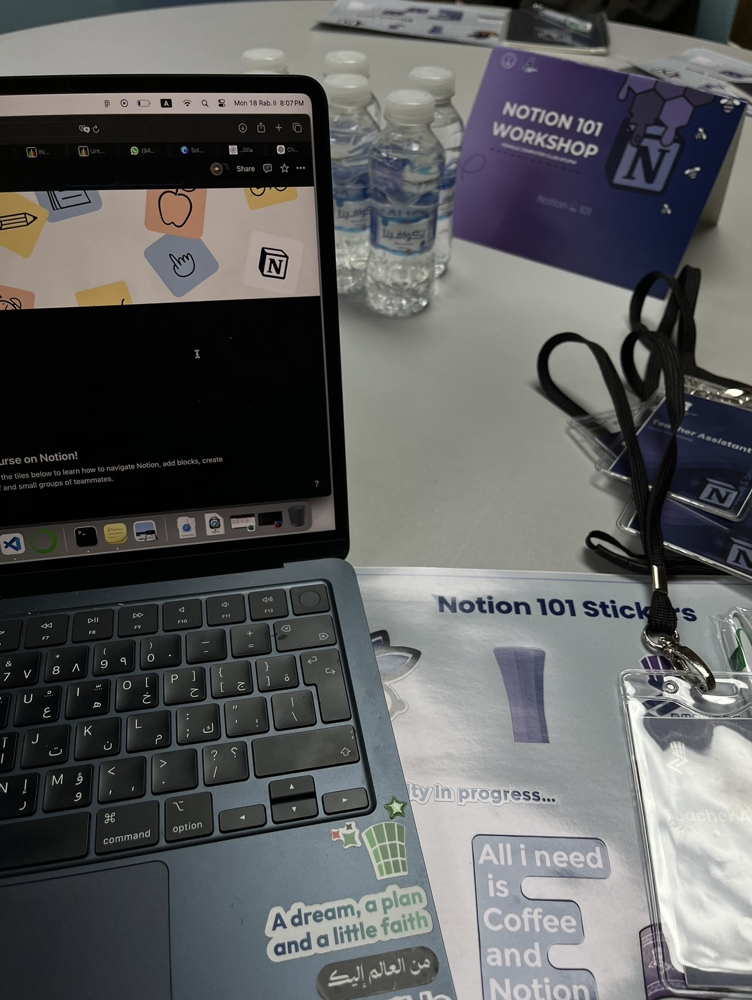
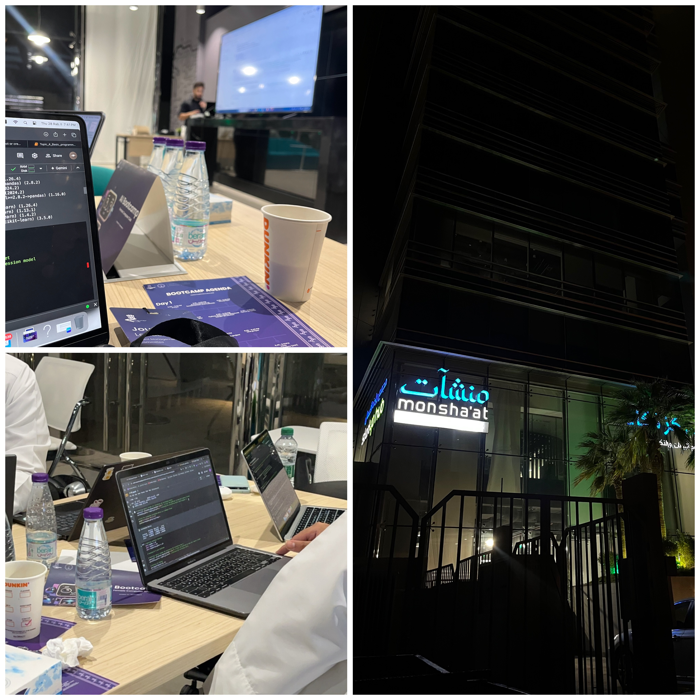
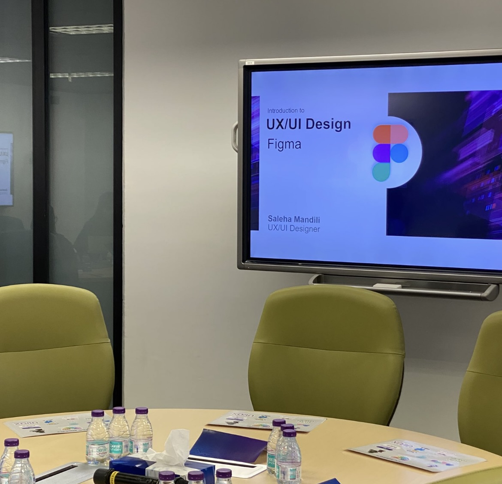
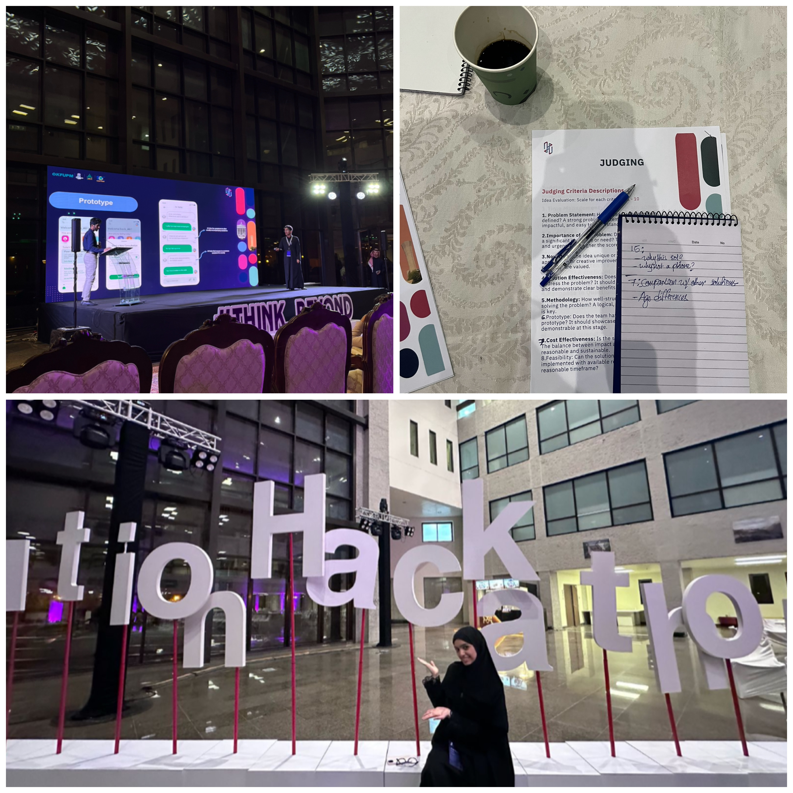
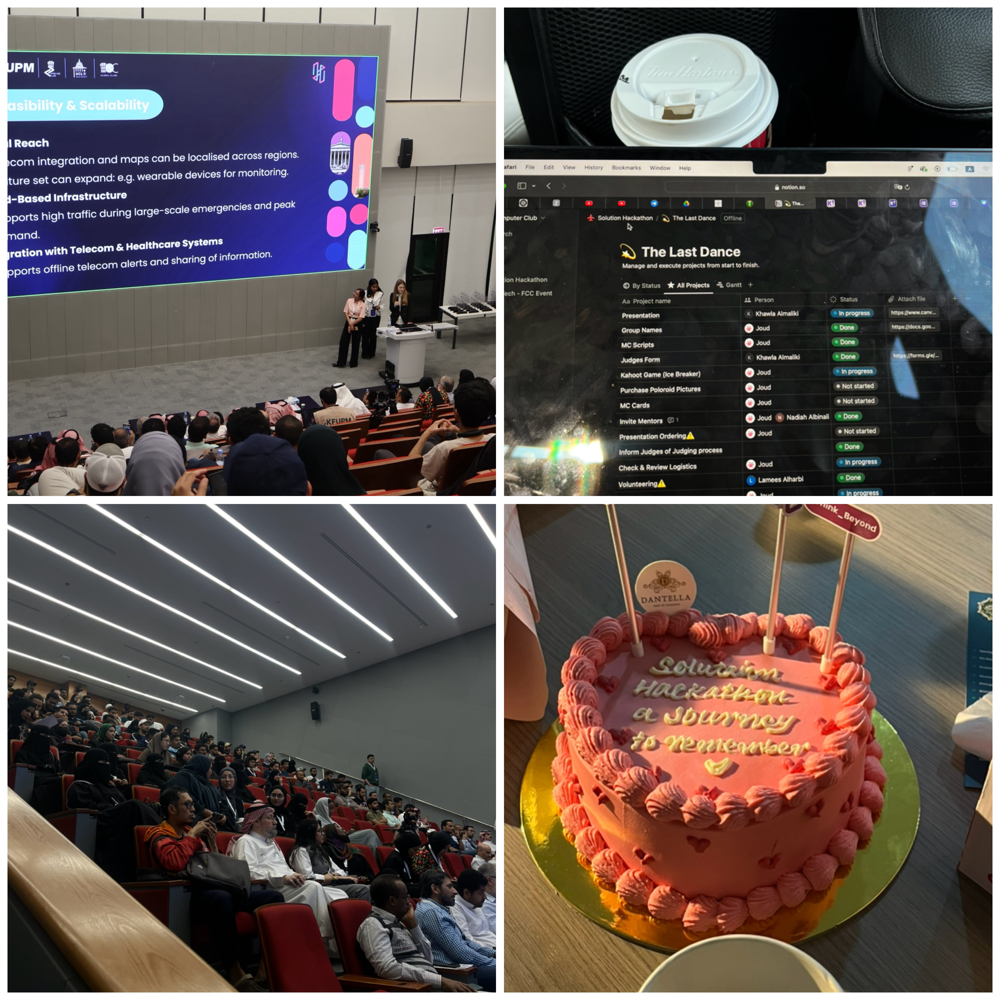
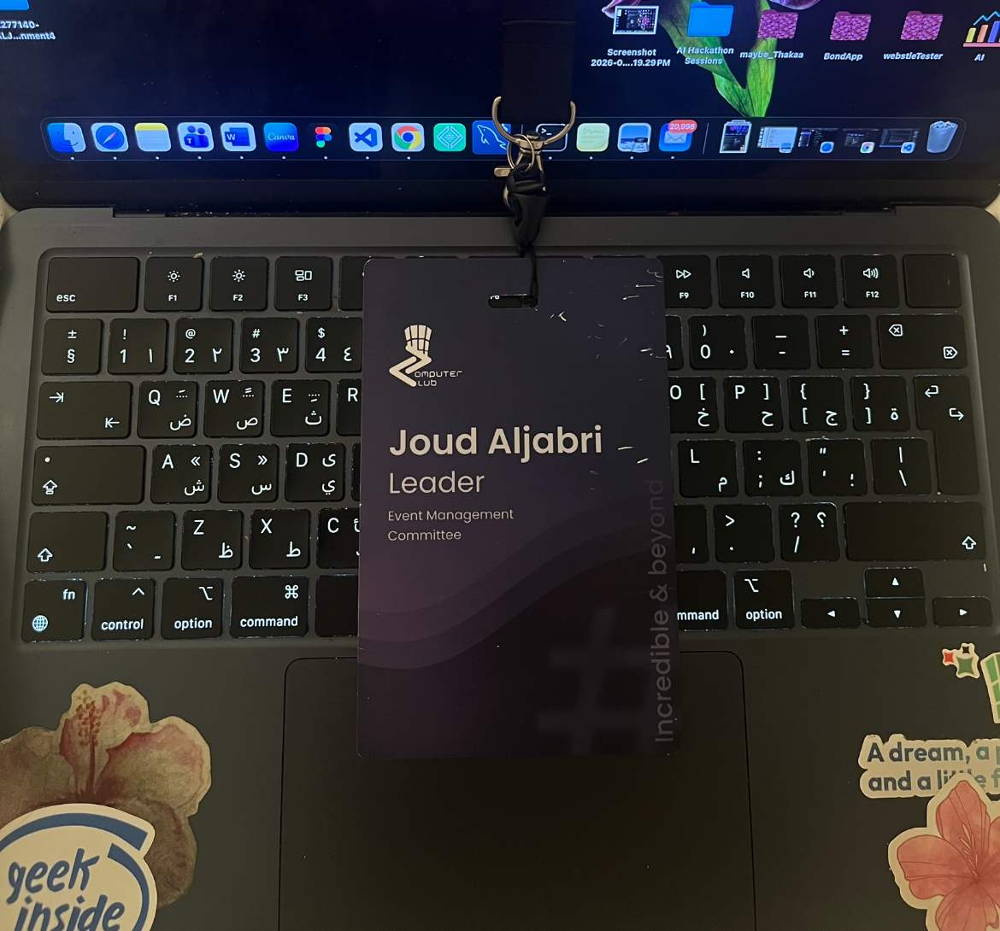

A year of leading events, workshops, hackathons, and making memories I'll carry long after graduation — all through KFUPM's Computer Club.
Written by Joud
It was the summer of '24. Freshman year was behind me, and I was completely done with joining university extracurriculars—or so I thought. Out of nowhere, I got an offer from the new club president, easily one of the most phenomenal leaders to ever run the organization. They told me: "I want you to take the leadership position of the club's most hectic committee. Are you willing to do that?" My first instinct was panic: Leader? Managing a team of 20+ people? That sounds incredibly scary. Leadership had always sounded daunting and overwhelming to me. I viewed it strictly as a heavy burden. Yet, that exact element of challenge is what made me say yes and dive into the journey—and let me tell you, it wasn't a smooth ride.

When we opened recruitment for the committee, my first reality check hit: we received over 100 applications. How could I possibly filter through all of them?
I was recruting on the plane on my way back to Saudi lol ✈️
Our first planned event, the excitment of rewriting the club's vision pushed us to planning a first huge event, something impactful but beyond tech, beyond coding skills and such. We wanted eveything perfect, from the depth of content, to seamless logistics, to good coffee! ☕️ "Explore KFUPM" broadened the knowledge to students new to KFUPM and inspired them to venture far beyond their academic comfort zones. Ended up welcoming 300+ visitors, scoring a win in our very first event 🎉 P.S. The catering guy ended up giving me free coffee for the rest of the year, absolute score🙌🏻

Leading both the content creation and event management sides made this one hell of an event to manage. It started out tough, from brainstorming and crafting all the content from scratch, to managing endless spreadsheets and volunteers, to overseeing the physical logistics and catering. But honestly? What I cared about most was that the committee members actually walked away learning something, rather than just being told what to do. That’s what made the whole experience so fun for me—even beyond the impact we made.
As the leader navigating everything from content creation and event management to jumping into the trenches of marketing and design, calling this an intense undertaking would be an understatement.

The AI bootcamp poster was attached right in front of our chairman's office, showing him our work ☝🏻☝🏻 The messyness right before our event was chilling, like expecting many guests pop up at your house.
Bringing KFUPM alumni back to campus — not as students, but as tech startup founders . As a founder enthusiast, the moment we conceived the idea for this panel discussion, I was incredibly driven. I wasn't just excited to hear the success stories of these highly impactful startups; I was fascinated to learn exactly how KFUPM alumni managed to break free from the constraints of traditional academia and build viable ventures while still balancing their studies.

Hearing their journeys from university ideas to real-world companies gave us an unfiltered look into the startup ecosystem. The honesty in the room was refreshing; no polished pitch decks, just real stories about what it actually takes to build something from scratch.
Alright, it was time for the real hands-on work to begin. If I'm being honest, we originally planned to host more than eight workshops. It turned out to be way too much on our plates, but as a self-proclaimed workaholic, I just couldn't help myself... Diving into the weeds of those workshops showed us just how much detail mattered, from mapping out technical paths to ensuring every single attendee had seamless access to the necessary source materials, repositories, and files.

One of our most fun collaborations was partnering with the Notion Community at KFUPM. We wanted to step away from traditional tech talks and keep things completely relaxed. This hands-on workshop was just a great excuse to build out our digital workspaces side-by-side and see how everyone customizes their setups.

There's learning about AI, and then there's living it for three days straight. Hosted at the inspiring Montshaat venue, and guided by a phenomenal presenter who had a knack for bringing intricate AI concepts to life. 👾

Sometimes the best way to learn is just hanging out with like-minded people. This was the workshop I was most excited about 🎨, given the fact that I'm a geek in visuals and design (awful obseesion btw). We stripped away the pressure of a formal class and just spent the time designing and talking about what makes an interface actually feel good to use.
A hackathon was one of the very first concepts we locked in at the beginning of the semester. Not just because hackathons are awesome, but because our team thrives on the high-stakes pressure of competition. Most importantly, we wanted to spark ✨solutions✨ that tackled actual problems around our university campus. But then, a bigger vision hit us: why limit ourselves? Why not take this to a global scale and connect with international universities? At first, our minds raced with a dozen different global collaborations, but we ultimately decided to anchor our focus, joining forces with UCL and the UCL Saudi Society.

We had the hacakthon hosted over two stages, the first stage was croweded with ideas where teams across different universites innovated and crafted real solutions to eventually qualify to the final stage, the finalies. Between managing the event, the mentors the judges, jumping into workshops, meeting an incredible crowd of builders, and the design and branding of the hacalthon, it was a blur of unforgettable memories. Watching teams pull all-nighters and demo something they built from scratch in 48 hours — that energy is hard to replicate anywhere else.

Our last dance, the finalies.
During the finalies, we hosted students participating from UCL all the way from London to KFUPM. The qualified teams pitched their ideas in front of judges and a big crowd, eventually having three amazing winners from nine different teams.

Leading content creation and event management for the club has been an absolute highlight of my university journey. Learned a lot, burnt out a lot, especially since I was operating on the global student research conference at the same time. Between the lines of code and late-night study sessions in my "Suffermore year" , getting to collaborate with my closest friends to bring these massive, insightful events to life is what I'll remember the most. It wasn't just about the events and impact we tried to give— it was about the people who showed up every single time and not letting you down, the late planning calls, and the feeling of watching something you built from scratch actually come together. That's the part I'll carry with me.